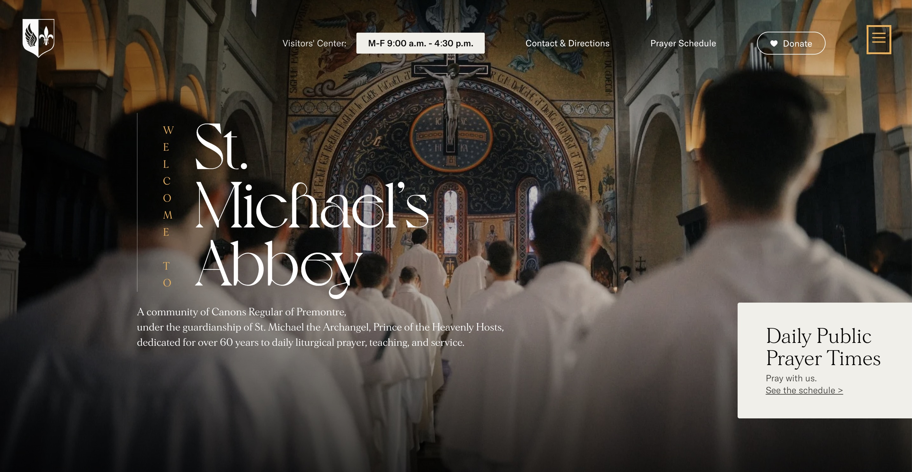
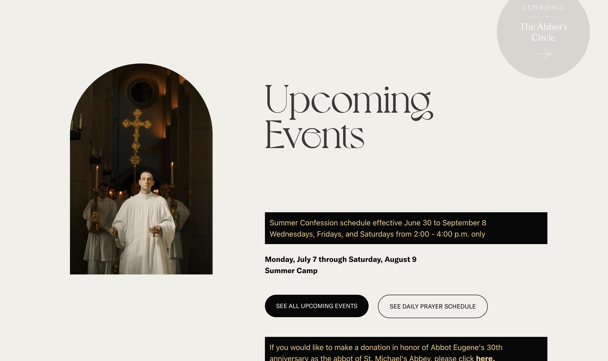

Our Services


This clean layout — with large visuals, clear typography, and spacious sections — is a great model for how we style your Services page. Your parish website will look beautiful, fast, and faithful.
What We Offer
- Monthly Website Maintenance
- SEO Optimization
- Bug Fixes & Troubleshooting
- Annual Site Refresh & Design Assessment
Let us handle the tech so you can focus on serving your parish and community.